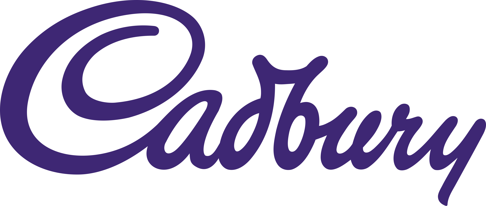
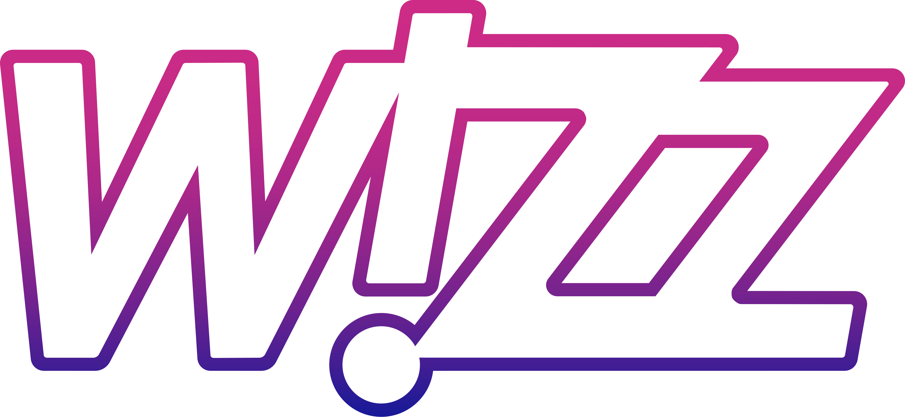
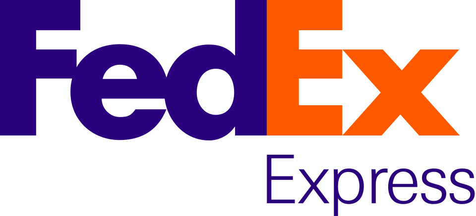
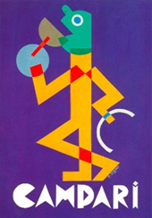
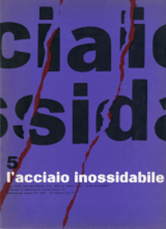
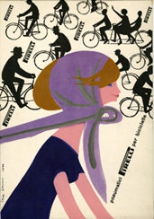

Il colore della percezione enigmatica e sofisticata
Il viola è un colore enigmatico e sofisticato, capace di trasmettere eleganza, mistero e intensità visiva.
A metà tra la stabilità del blu e l'energia del rosso, genera una percezione più ambigua e contemplativa rispetto ad altri colori dello spettro.
Storicamente era associato a magia, spiritualità, lusso e potere. Nel tempo è diventato simbolo di creatività e raffinatezza, ma anche di nostalgia, ambiguità e introspezione.
È stato inoltre legato a movimenti culturali e identitari, assumendo significati sociali e simbolici.
Esso viene utilizzato per creare identità visive eleganti e facilmente distinguibili.
È spesso impiegato nella comunicazione di brand alimentari, tecnologia, logistica e compagnie aeree, dove contribuisce a trasmettere innovazione, immaginazione e sperimentazione visiva.
128, 0, 255
50%, 100%, 0%, 0%
40, 83, -93
270°, 100%, 100%
Marchio Cadbury, 1921

Marchio WizzAir, restyling del 2015

Marchio Federal Express, rebranding del 1994

Manifesto pubblicitario per Campari, 1926-27

Copertina rivista "L'acciaio Inossidabile", 1962

Manifesto per Pirelli, 1954-1958
